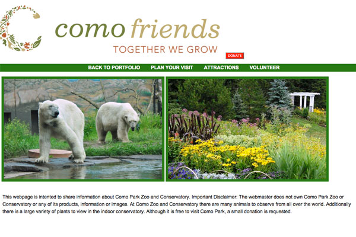
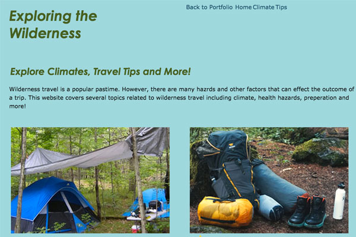
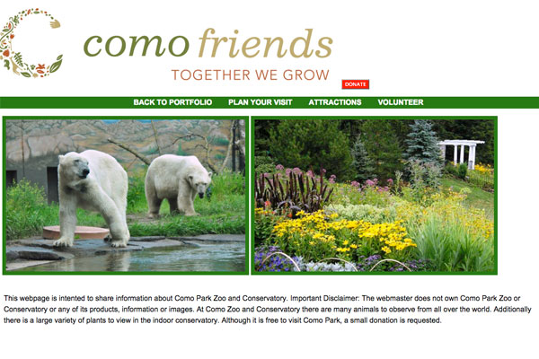
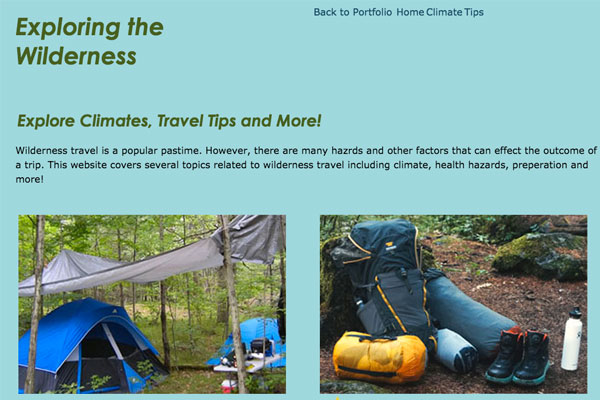

My name is Molly Hennessy. I am a student at the Minneapolis College of Art and Design where I am a second year student in the Interactive Design and Marketing program. I have created this website to showcase my experience and skills. I have included several projects that I created during the course of my time at MCAD. The links to these projects can be found on the navigation menu listed under projects. Below I have included a brief description of each project. After completed by studies at MCAD my career goals are too obtain employment in web development or project management.

 



This website was created as part of my Web Design Principals Course during my first year at MCAD. This was a design based final assignment that required us to create a website featuring some issue in our community. I chose to focus on occupational issues in Minnesota. In addition to the HTML and CSS I have included Responsive Design on the webpages.
This website was initially created as partof my web development course during my first year at MCAD. This was part of a final project where we were assigned to create a three page website featuring our HTML and CSS skills. I decided to create a fictional kids sports summer camp theme for my website. The website includes images, general information about the camp, activities and sports offered. Later I added Javascript and Responsive Design to the webpages.
This website was created for my Responsive Design course at MCAD. This course and this project had both a web design and development focus. This assignment was to find a website online and redesign three pages of the website. I choose the Como Park and Conservatiory website. When creating these pages I incuded design elements, HTML, CSS, SCSS and Responsive Design.
This website was created as a semester long project for my Advanced Projects Studio course at MCAD. For this website I decided on a front-end web development focus. I created a website with a wilderness theme. The website consists of ten pages of information about climates, camping tips and survival skills. For this website I have included HTML, CSS, Javascript, PHP and Responsive Design.